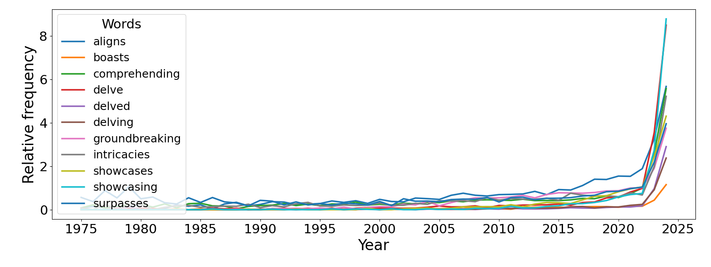
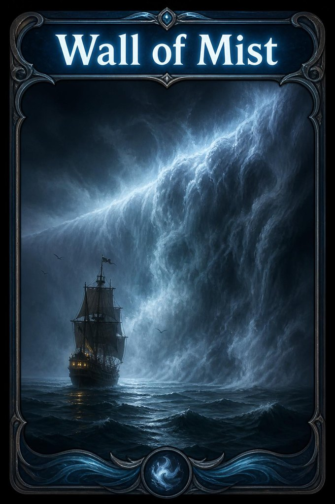

Data Science and Machine Learning Seminar · Department of Mathematics
—
Tracing the em dash through pretraining, SFT, and DPO
Tommie Juzek
Florida State University · 13 November 2026
First, my field
Computational linguistics
Between
linguistics and computer science.
Computation for language
insights about how language works.
Computation on language
language as data, at scale.
Known well beyond the field: language models, which grew in size and became large language models.
This talk
From an overused dash to how models learn
1An observation. “AI” overuses some words and punctuation: delve, the em dash.
2Why it matters. Possible effects on how people write, and on what they believe.
3The question. Why the overuse? Part of the wider question of alignment.
4The method. The em dash as a tracer dye, followed through each stage of training.
5The finding. Pretraining is copied; SFT may contract;
DPO may tilt, and amplify.
How LLMs use language
A sentence you have read before
“Whether you are a seasoned scholar or a curious newcomer, the modern library is not merely a quiet sanctuary for books, but an intricate hub of lifelong learning—inviting patrons to delve into the rich tapestry of human knowledge.”
They overuse certain formatting, characters, words, and syntax: here the em dash, delve, and “not merely X, but Y”.
And they may not align with us on values, beliefs, and stance.
N.B. Each model has its own profile: AI idiolects (Rudnicka and Juzek, preprint).
The sentence: an illustration in a chatbot’s style, from the Carothers Lecture (Juzek and Ward, October 2026). Rudnicka and Juzek, “Beyond ‘AI Language’”, arXiv 2608.06589.
Noted early on
Unprecedented, rapid change

Flat for decades, then a jump in 2023 and 2024. Noticed early, online and in research.
With Zina Ward: these marker words, and why the models overuse them.
Juzek and Ward, “Why Does ChatGPT ‘Delve’ So Much? Exploring the Sources of Lexical Overrepresentation in Large Language Models”, COLING 2025: Figure 4, lower panel; occurrences per million words in PubMed abstracts. Some of the 21 focal words (upper panel) were rising for decades; the jump came on top.
At the same time
Who wrote it?

For anything written since 2022, we cannot be sure who wrote it: human-authorship indeterminacy. A simple question, “how frequent is X?”, has moved behind a wall of mist.
A huge disruption for linguistics, and for computational linguistics.
Natural change: Google Books Ngram Viewer (corpus “en”, smoothing 3), per million words, each word on its own scale; retrieved 19 October 2026. “Human-authorship indeterminacy”: Anderson, Galpin and Juzek, AIES 2025. The card: AI-generated (ChatGPT Images 2.0), from the LCL talk, May 2026.
But why should you care?
Because it is about alignment
Models do not always do what, at first glance, we expect them to do. There is some X factor.
1Style. The em dash —
2Words. delve
3Values, beliefs, stance. Next: a grammar check that moves the meaning.
Values, beliefs, stance
“Does money lead to happiness?”
About 100 US adults, one essay each; GPT-4o judged each essay’s stance.
Without AI, two in five essays took no side; when the AI wrote much of it, two in three.
Asked only to fix the grammar, the models still moved the meaning.
Abdulhai, White, Wan, Qureshi, Leibo, Kleiman-Weiner and Jaques, “How LLMs Distort Our Written Language”, arXiv 2603.18161 (preprint): Figure 6, redrawn. Groups of 45, 28, and 27; the AI assistant was assigned at random, and people chose how much to use it. The grammar test: 86 essays written in 2021.
We asked for grammar. We got a stance.
A misalignment in miniature: the tool does something we did not ask for, and we do not see it happen.
In 2025 we called the word-level version of this “model misalignment”.
Beliefs by design
Chinese models
Against “freedom of AI” in liberal societies (Tijl De Bie)
Whoever trains the model can shape what millions read and write.
Interim Measures for the Management of Generative AI Services, Article 4 (in force 15 August 2023; tr. China Law Translate). Pan and Xu, PNAS Nexus 2026. Lambert and Brand, “The ATOM Report”, arXiv 2604.07190 (preprint). Ito and Takaguchi, “Exporting Ideologies via AI?”, Harvard-Yenching working paper 2025: two of four derivatives were largely clean. De Bie: ECML PKDD BIAS 2025 workshop talk.
Exposure
AI-written text is everywhere
≥ 13.5%
of 2024 PubMed abstracts were processed with LLMs (a lower bound)
Kobak et al., Science Advances 2025
29%
of US STEM dissertations filed in 2026 contain AI writing; none before 2023
Gross, Shvadron and Zhang, NBER working paper 2026
about 9%
of new US newspaper articles (summer 2025) were partly or fully AI-generated
Russell et al., ACL 2026
1Exposure shapes us. What we meet often, we come to like; and we take on a partner’s words, more so if we think it is a computer.
2Even attitudes. Biased writing assistants moved users’ attitudes towards the AI’s position; most did not notice.
So misaligned AI really matters.
The second and third use one commercial detector (Pangram), whose makers supported or co-wrote the studies. Mere exposure: Zajonc, J. Personality and Social Psychology 1968. Lexical alignment with a supposed computer: Branigan, Pickering, Pearson, McLean and Brown, Cognition 2011. Williams-Ceci et al., Science Advances 2026 (N = 2,582).
Into spoken language
AI’s favourite words, in unscripted speech
1,326 science and technology podcast episodes, 22.1 million words. Each podcast before (2019 to 2021) and after (2023 to 2025).
up: weighted log ratio 0.21, p < 0.001
delve, intricate, meticulous, boast, surpass …
flat: 0.03, not significant
the baseline: same meanings, no AI association
But this is a correlation: there is no counterfactual.
We really want to get this right.
Anderson, Galpin and Juzek, “Model Misalignment and Language Change: Traces of AI-Associated Language in Unscripted Spoken English”, AIES 2025.
Why the overuse? Our earlier work, with Zina Ward
A conjecture, and a test
No evidence that model architecture, algorithm choices, or training data cause the overuse; comparing models is consistent with learning from human feedback.
So: post-training plays a major role.
We emulated the collection of preference data: 400 raters chose between two versions of an abstract.
They preferred the version with more of the words that Llama’s post-training favours: 52.4% to 47.6% (χ² = 9.4, p < 0.01).
Consistent with the hypothesis: a small preference, scaled up by training. How, exactly?
Juzek and Ward, COLING 2025 (the conjecture). Juzek and Ward, “Word Overuse and Alignment in Large Language Models: The Influence of Learning from Human Feedback”, BIAS workshop, ECML PKDD 2025, arXiv 2508.01930 (the test): Llama 3.2 3B, base against instruct; raters on Prolific, from countries where preference workers are often recruited. Word by word, it varies: delve and nuanced may stand out to raters.
Model stages
Pretraining, then post-training
Post-training, broken down: SFT; preference learning, DPO (or PPO, as in RLHF); RLVR; further fine-tuning.
Here: SFT and DPO. The word overuse (delve) was seen before RLVR was widespread.
A sighting in the wild: OLMo-2, an open model, stage by stage
In its instruction data, nearly all the dashes come with ChatGPT’s answers.
The preference step multiplies what it writes by 2.75. work in progress
OLMo-2 1B (Ai2), four released checkpoints, continuing the same 10,000 news articles, sampling (T = 1), first 40 words; whiskers 95% intervals. Training data counted by us. Team OLMo, “2 OLMo 2 Furious”, arXiv 2501.00656; WildChat answers in its SFT mix.
The ideal experiment
Train from scratch, turn the knobs, see what comes out
The ultimate goal: a mathematical model of what each stage does. More on that shortly.
Compute sets the scale: small models, trained from scratch. That works well for the dash, probably for words; for stance, we shall see.
Not a black box
Deterministic machines, built by humans
The randomness is pseudo-randomness: same input, same seeds, same settings, same output.
So we can do what science does with any machine: build it, change one thing, run it again, and measure.
And we can read out every probability it assigns, at every step.
The method
Tracer dye
Put a known amount of dye in at a known point. Watch where, and how strongly, it comes out.
Dosed at every stage
Pretraining, SFT, and DPO, each at set doses, in every combination.
Countable
One glyph, counted exactly; and the model’s probability for it at every step.
Known background
415 per million tokens in the web text; dosed down to zero.
Harmless
Validation loss on everything but the dash differs by about 0.01 nats across doses.
The dye: — low stakes, high counts, and a famous tell.
The experiment: a dose grid
Dye in at every stage; read after every stage
The reading: the expected number of em dashes per million tokens, summing the model’s own probability of the dash along its own text.
Pre-pilot: GPT-2-shaped models (124M) trained from scratch on DCLM web text at four doses, 3 seeds each (a near-zero dose runs next); SFT on 20,000 chat answers; DPO (β = 0.1) on 8,000 pairs. Reading: 2,000 news and 1,000 chat prompts, sampled at T = 1. Juzek et al., work in preparation.
Copy · pretraining
The base model writes what it read.
Dose response 1.04 (90% interval 0.95 to 1.14): twice the dose, twice the dashes.
Never saw it: never writes it (0.002 per million).
124M, 3 seeds per dose (one dot each); news continuations, T = 1; expected count.
Contract · SFT
A 16-fold range of pretraining doses leaves a 2.2-fold range on news and 1.5-fold on chat.
The natural-dose models overshoot the rate in the SFT data.
Geometric means over 3 seeds; whiskers the range of the seeds. Dashed and dotted lines: the rate in the SFT data (1× and 4×). T = 1; expected count.
The maths, 1 · each stage is a line in log space
copy log m = log d + cslope 1
contract log m′ = (1 − λ) log m + λ y*slope 1 − λ
d: dose in the pretraining text; m: what the model writes; y*: where SFT pulls. Slope: change in log₂ output per doubling of the dose (¼× to 4×), mean of 3 seeds, 90% intervals. SFT keeps about a quarter of the dose’s effect on news, an eighth on chat.
Tilt · DPO · the maths, 2
The best model on a leash
maximise Ey ∼ π[ r(y) ] − β KL(π ‖ πref)
reward, minus a leash (β) to the model before, πref
⇒ π*(y) ∝ πref(y) · er(y) / β
For a feature against its alternative: Δ log-odds = ε / β
ε: the feature’s reward advantage over its alternative
1It multiplies. A shift in log space: what is there grows by a factor.
2Only differences count. Preferences compare two answers; what both share cancels.
3A multiple of nothing is nothing. Where πref is near 0, so is π*.
The KL-regularised optimum behind DPO: Rafailov et al., “Direct Preference Optimization”, NeurIPS 2023 (arXiv 2305.18290). Δ = ε/β: the derivation in our NSF CAREER proof of concept (unpublished).
Tilt · by hand
After a clause, the model can continue with a comma, an em dash, or “and”.
Multiply each by er/β, then rescale so they sum to 1.
Advantage of the dash over the comma: ε = log 4.
Before: the dash at 0.10.
β = 2: Δ = 0.69; dash 0.16
β = 1: Δ = 1.39; dash 0.25
β = ½: Δ = 2.77; dash 0.47
A tighter leash (larger β), a smaller tilt.
Every number by hand: πref = (0.6, 0.1, 0.3); rewards 0, log 4, log 2. A toy example.
Where the dye is isolated, the law holds
Pairs that differ in one token only: the em dash against a comma. The preference and β set exactly.
36 settings, 6 seeds each: slope 1.01, r = 0.994.
The same for ten features, word choice included: slope 0.98.
unpublished pilot
GPT-2 (124M), minimal pairs over many sentence stems; DPO with labels drawn at preference rate p, so ε = logit p; β from 0.5 to 6. The unspaced em-dash token. NSF CAREER proof of concept, June 2026.
Tilt · in the full pipeline
The side that carries the dash sets the sign
Pairs with no dash push punctuation in general: in one model the colon rose 59% and the dash 9%; in none of 18 did the dash outrun the other punctuation.
Natural-dose models after SFT 1×; 8,000 pairs, 5% of them carrying the dash (both sides: the natural rate); news, T = 1; 3 seeds, whiskers the seed range. Chat agrees: preferred side ×1.75, rejected ×0.78. A second round of post-training, with new seeds, keeps every direction shown.
Tilt · the contrast acts as a dose
Below 1 : 1 the dash falls; above it, it rises at every step: with the ratio, then with the number of carriers.
Dashes on both sides, even four times as many, add little: contrast counts, volume largely cancels.
Each set adds exactly one em dash to some answers, so the ratio of carriers is the ratio of dashes. After SFT 1×; T = 1. Geometric means over nine models (¼×, 1×, and 4× doses, 3 seeds each), 432 DPO runs in all. The order holds at every step after SFT 1× and 4×, on news and on chat.
The read-out · decoding is a tilt too
πT(y) ∝ π(y)1 / T
then top-p keeps only the likeliest tokens, 95% of the probability
The same models, read at T = 0.8: a rare habit nearly vanishes, a common one survives.
Every contrast keeps its direction, and grows: at 1,198 : 0, ×1.6 to ×1.9 over dash-free pairs becomes ×2.2 to ×3.9.
Natural-dose models after SFT, 3 seeds; the expected count under each decoding. Temperature alone would turn a factor r into about r1.25 (×1.9 into ×2.2); the top-p cut likely does the rest (our reading, not tested). The design asks every effect to hold at both decodings: on the ratio axis, all 480 models were read at both, and it does.
Copy, contract, tilt · the pipeline in one picture
What the models write, after SFT and then DPO, one line per pretraining dose.
copy sets the order; contract has squeezed the spacing.
tilt lifts every line with the contrast; the order never changes.
More carriers, more lift, and the biggest multiple where pretraining put least.
Where pretraining put nothing, nothing grows.
News, T = 1, expected count; geometric means over 3 seeds per pretraining dose. After SFT 1×; DPO with one em dash per carrying answer (β = 0.1, one pass over 8,000 pairs). Readings from one machine only. After the pre-pilot report’s Figure 9.
Tilt · rare items
DPO’s relative force is greatest on rare items
The multiple follows how rare the dash was in pretraining: the ¼× models write 6, 372, or 1,571 per million after SFT, and DPO multiplies each by ×2.0 to ×2.4.
Next, a near-zero dose between none and ¼×: present, but very rare, as delve was in 2022. running next
DPO: one em dash in each of 1,198 preferred answers (β = 0.1, one pass over 8,000 pairs); T = 1; geometric means over 3 seeds, whiskers the seed range; one machine. Dose 0 after SFT 0 or 1×: below the floor. The pretraining dose sets the multiple: a first look, over 27 models.
Tilt · a multiple of almost nothing
DPO did not create the dash, at this light recipe
| Models that never saw a dash in pretraining (3 seeds); chat | before DPO | after 1,198 preferred-side dashes |
|---|---|---|
| no dash in SFT either | 0.006 per million | 0.008 to 0.010 |
| a trace from SFT 1× | 1.1 to 2.9 | 5.3 to 16.6 |
| SFT 4× put it in | 686 to 849 | 3,136 to 3,482 |
DPO multiplies what is there. Where almost nothing is there, a multiple of it is still almost nothing.
Where SFT 4× put the dash in, DPO multiplied it most: ×4.3 on chat, up to the level of models pretrained on it (2,686 to 3,400).
SFT is different: at 350M, SFT 1× alone put the dash into a model that never saw it (72 per million, chat; one seed). first look
Expected em dashes per million tokens; a counted dash would show from about 14 per million. DPO: β = 0.1, one pass over 8,000 pairs. In theory a big enough push can grow anything; ours was a light one.
Copy, contract, tilt
Copy
pretraining
Writes in proportion to what it read.
slope 1
Contract
SFT
Shrinks the differences pretraining left, and pulls towards a level of its own.
slope 1 − λ
Tilt
DPO
Multiplies what is there, by the contrast between the answers; rare habits most.
shift by Δ
log mfinal ≈ (1 − λ)(log d + c) + λ y* + Δ(contrast)
Where the line bends: the tilt is larger the rarer the habit (×1.75, ×1.61, ×1.31 at ¼×, 1×, 4×; along the ratio axis too); dash-free pairs move punctuation in general; at 350M, SFT starts from zero; seeds alone differ by up to 1.47×.
The preferred-side contrast, news, 3 seeds. Ratio axis: the factor shrinks from the ¼× to the 4× models in 11 of 12 columns from 400 : 0 up (90% intervals). Seeds: after SFT 1×, news, natural dose. A sketch to be tested on the 350M and 774M models.
What the dye says about alignment
1Small preferences, predictable shifts. A reward advantage ε moves the log-odds by ε/β; in the full pipeline, the contrast between answers acts as a dose.
2DPO’s relative force is greatest on rare items. It multiplies what is there, so much of a model’s behaviour is set before it: in pretraining and in SFT, whose data other models often wrote.
3Training on X moves Y. Pairs with no dash at all moved punctuation in general.
4Undoing leaves a trace. Training the opposite preference brought the trained feature back to within 10 to 20%; the rest of the model stayed where it had moved.
5The settings are part of the machine. Seeds alone moved outputs by up to 1.47×, more than many DPO effects; reading at T = 0.8 instead of 1 cut the habit 9- to 25-fold after SFT 1×.
Does the dye move with the water?
From a glyph to a word to a stance
1Punctuation. The ε/β law for the em dash, the semicolon, and others.
2Words. The same law for AI-signature words such as delve: ten features, slope 0.98.
3Stance. In OLMo-2 7B, the same arithmetic installs an evaluative stance towards countries, on wording it was never trained on (slopes 0.99 to 1.34, six country pairs).
4And a warning. Train only on praise, and the model mentions the country more often; its stance hardly moves.
pilots, unpublished
Where this goes
Next steps
1Scale up. From the dash to words and to stance.
2Mathematical modelling. From fitted lines, stage by stage, to a model of the whole pipeline.
3Mitigation. Explore better training procedures.
I am still doing model diagnostics, though the focus has moved from model behaviour to model mechanics.
We can gain very solid insights.
The dye shows us the plumbing.
What training amplifies, what it leaves at nothing, and what it moves that nobody asked it to.
With thanks
Zina Ward: this continues our joint work; ideas here go back in part to our conversations of about a year and a half ago.
Gordon Erlebacher: a great deal of input throughout.
Karolina Rudnicka: the idea of looking at what em dashes do, their functions.
Related work with Alyssa Beguiristain (UROP).
—
Thank you.
Every number on these slides: the opening
| Number | What | Source |
|---|---|---|
| 21 | focal words in PubMed abstracts, 1975 to 2024: flat, then a jump in 2023 and 2024 | E1.5 |
| 5.4 → 16.0; 0.14 → 2.7; 0.69 → 2.5; 0.006 → 0.14 | literally, dude, salty, touch base in Google Books, per million, 1960 to 2022 | E1.6 |
| 39.5%; 66.7%; 86 | essays taking no side: written alone; with heavy AI use (groups of 45, 28, 27); essays from 2021 in the grammar test | E1.2, E1.3 |
| about 36%; 0 to 2.8%; 69% | DeepSeek’s refusals of 145 political questions asked in Chinese; models from outside China; Qwen’s share of new fine-tunes, February 2026 | E1.7 |
| ≥ 13.5%; 29%; about 9% | 2024 PubMed abstracts processed with LLMs; US STEM dissertations of 2026 with AI writing; new US newspaper articles, summer 2025 | E1.8 |
| 2,582 | participants: biased writing assistants and attitudes | E1.9 |
| 0.21; 0.03 | AI-associated words and their synonyms in podcast speech, 2019 to 2021 against 2023 to 2025 (22.1 million words, 1,326 episodes) | E1.1 |
| 400; 52.4% to 47.6% (χ² = 9.4) | raters; their preference for the version with more of the words Llama’s post-training favours | E1.10 |
Every number on these slides: the experiment
| Number | What | Source |
|---|---|---|
| 491; 373; 412 | OLMo-2 1B’s training data: web text; its SFT answers; preferred answers (per million tokens; work in progress) | E2.1 |
| 679; 513; 1,409; 1,160; 966 | OLMo-2 1B continuing news, sampled: base, SFT, DPO, final; the articles’ writers (work in progress) | E2.2 |
| 2.75× | OLMo-2 1B, DPO against SFT, paired (95% interval 2.33 to 3.27) | E2.2 |
| 415 | em dashes per million tokens in the web text (DCLM), the natural rate; doses 0, 104, 415, 1,667 | E3.2 |
| about 0.01 nats | spread of masked validation loss across the four doses (seed means 3.555 to 3.568) | E3.11 |
| 0.002 | base models with no dash in pretraining: expected per million (news) | E3.3 |
| 1.04 (0.95 to 1.14) | dose response of the base models, news | E3.6 |
| 2.2-fold; 1.5-fold | range after SFT 1× over the ¼× to 4× doses: news 377 to 811; chat 374 to 546 | E3.4 |
| 0.28; 0.14 | dose response after SFT 1×: news; chat (SFT 4×: 0.14; 0.06) | E3.6 |
| ×1.62; ×0.90; ×1.10; ×0.83; ×1.27 | DPO factors, natural dose, news: preferred side; rejected side; no dashes; labels swapped; both sides | E3.7 |
Every number on these slides, continued
| Number | What | Source |
|---|---|---|
| ×1.75; ×0.78 | the same, chat: preferred side; rejected side | E3.7 |
| +59%; +9%; 0 of 18 | dash-free pairs: the colon and the dash (one natural-dose model, news); cells where the dash outran the punctuation | E3.14 |
| ×0.93 to ×2.10 | the ratio axis after SFT 1×, chat (news ×0.97 to ×1.90); dash-free pairs ×1.11 (×1.13); nine models | E3.8 |
| 575 → 43; 447 → 18 | natural-dose model after SFT 1×, read at T = 1 and at T = 0.8 with top-p 0.95: news; chat | E3.16 |
| ×1.6–1.9 → ×2.2–3.9 | 1,198 : 0 against dash-free pairs, at T = 1 and at T = 0.8 (four columns, nine models each) | E3.17 |
| 372 to 862; 781 to 1,203 | news after SFT 1×, before DPO and at 1,198 : 0: the ¼× and 4× models (the one-picture chart) | E3.15 |
| ×2.0 to ×2.4; 6, 372, 1,571 | DPO’s factor at 1,198 : 0 on the ¼× models after SFT 0, 1×, 4×, and their rates before DPO (news, per million); the rare-items chart | E3.20 |
| 0.006 to 3,482 | dose-zero models before and after DPO with 1,198 preferred-side dashes (chat, 3 seeds) | E3.9 |
| ×4.3; 2,686 to 3,400 | the same after SFT 4×: DPO’s factor on chat; the dosed models at 1,198 : 0 | E3.9 |
| 72 | 350M, never saw the dash, after SFT 1×: chat, per million (one seed; 124M: 1.1 to 6.5) | E3.12 |
| ×1.75; ×1.61; ×1.31 | preferred-side DPO factor at the ¼×, 1×, 4× doses (news); ratio axis: shrinks in 11 of 12 columns | E3.13, E3.19 |
| 1.47× | largest seed-to-seed ratio after SFT 1× (news, natural dose) | E3.10 |
| ×1.52; ×1.09; ×0.77; ×0.88; ×1.12 | a second round of post-training (seeds 11 to 13), news: preferred side; no dashes; rejected side; labels swapped; both sides | E3.18 |
| 0.16; 0.25; 0.47 | the toy em dash at β = 2, 1, ½ (from 0.10) | E4.1 |
| 1.01; 0.994 | the ε/β law, em-dash token: slope and correlation over 36 settings (unpublished pilot) | E4.2 |
| 0.98 | the same law pooled over ten features (unpublished pilot) | E4.3 |
| 0.99 to 1.34 | stance (valence) slopes on held-out wording, OLMo-2 7B, six country pairs (unpublished pilot) | E4.4 |
| 10 to 20% | what is left of a trained shift after naive reversal (unpublished pilot) | E4.5 |
Every row is in evidence/EVIDENCE.md with its source file and filter. 07b numbers: 124M pre-pilot, T = 1 unless stated, expected counts; the desktop’s and the second instance’s readings are never mixed in one chart.
Sources: the opening
Abdulhai, White, Wan, Qureshi, Leibo, Kleiman-Weiner and Jaques (2026). How LLMs Distort Our Written Language. arXiv 2603.18161 (preprint).
Anderson, Galpin and Juzek (2025). Model Misalignment and Language Change: Traces of AI-Associated Language in Unscripted Spoken English. AIES 2025.
Branigan, Pickering, Pearson, McLean and Brown (2011). The role of beliefs in lexical alignment: Evidence from dialogs with humans and computers. Cognition 121(1).
Cyberspace Administration of China et al. (2023). Interim Measures for the Management of Generative Artificial Intelligence Services, Article 4. Translation: China Law Translate.
De Bie (2025). Talk at the BIAS workshop, ECML PKDD 2025, on “freedom of AI” in liberal societies (from Tommie’s notes).
Google Books Ngram Viewer: literally, dude, salty, touch base; corpus “en”, smoothing 3, 1960 to 2022; retrieved 19 October 2026.
Gross, Shvadron and Zhang (2026). How heavily are PhD students offloading their scientific writing to AI? NBER Working Paper 35859.
Ito and Takaguchi (2025). Exporting ideologies via AI? Harvard-Yenching Institute Working Paper.
Kobak, González-Márquez, Horvát and Lause (2025). Delving into LLM-assisted writing in biomedical publications through excess vocabulary. Science Advances 11(27).
Lambert and Brand (2026). The ATOM Report: Measuring the open language model ecosystem. arXiv 2604.07190 (preprint).
Pan and Xu (2026). Political censorship in large language models originating from China. PNAS Nexus, pgag013.
Rudnicka and Juzek (2026). Beyond “AI Language”: The case for the idiolectal nature of LLM output. arXiv 2608.06589 (preprint).
Russell, Karpinska, Akinode, Thai, Emi, Spero and Iyyer (2026). AI use in American newspapers is widespread, uneven, and rarely disclosed. ACL 2026; arXiv 2510.18774.
Williams-Ceci et al. (2026). Biased AI writing assistants shift users’ attitudes on societal issues. Science Advances 12(11).
Zajonc (1968). Attitudinal effects of mere exposure. Journal of Personality and Social Psychology 9(2, Pt. 2).
Sources: the experiment
Juzek and Ward (2025a). Why Does ChatGPT “Delve” So Much? Exploring the Sources of Lexical Overrepresentation in Large Language Models. COLING 2025.
Juzek and Ward (2025b). Word Overuse and Alignment in Large Language Models: The Influence of Learning from Human Feedback. BIAS workshop, ECML PKDD 2025; arXiv 2508.01930.
Rafailov, Sharma, Mitchell, Ermon, Manning and Finn (2023). Direct Preference Optimization: Your Language Model Is Secretly a Reward Model. NeurIPS 2023; arXiv 2305.18290.
Team OLMo et al. (2024). 2 OLMo 2 Furious. arXiv 2501.00656. Lambert et al. (2024). Tülu 3: Pushing Frontiers in Open Language Model Post-Training. arXiv 2411.15124.
Zhang, Xiong, Chen, Zhou, Huang and Zhang (2025). From Lists to Emojis: How Format Bias Affects Model Alignment. ACL 2025.
Freeburg (2026). The Last Fingerprint: How Markdown Training Shapes LLM Prose. arXiv 2603.27006 (preprint): the markdown account of the em dash, one of the factors we test.
Our own data, work in preparation: the 07b dose grid (pre-pilot, November 2026); the NSF CAREER proof of concept (June and July 2026); the OLMo ledger (September 2026).
How these slides were made
Tommie Juzek set the argument, the running order, and the substance; the numbers come from his group’s research data and the cited sources; unpublished results are marked. Claude (Anthropic’s Opus) built this page from his notes and direction, drew the figures from those numbers, and drafted the slide text.
Images: the Wall of Mist card is AI-generated (ChatGPT Images 2.0), from Tommie’s LCL talk (May 2026); the PubMed figure is Figure 4 of Juzek and Ward (COLING 2025), as published.
Type: Newsreader and Inter (SIL Open Font License). Slides: reveal.js (MIT). Numbers and sources: the appendix (A1 to A5).